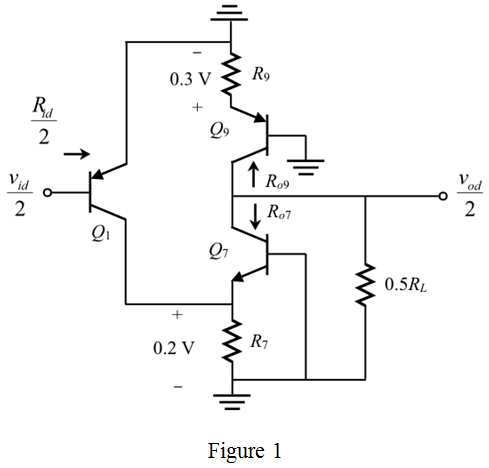
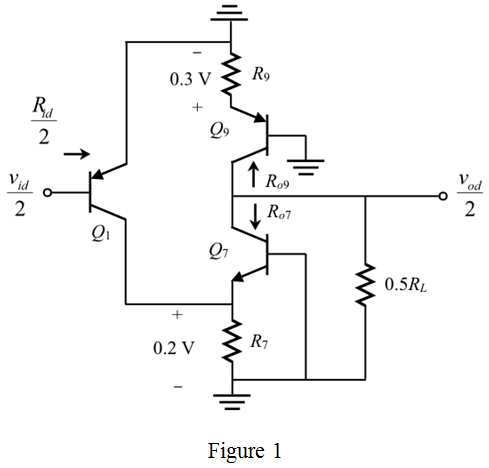

Refer to Figure 12.43 in the textbook for the equivalent half circuit.
The transistor  is biased at a current, and both the transistors are biased at
is biased at a current, and both the transistors are biased at  .
.
Draw the modified circuit for the equivalent half circuit.

Refer to Figure 12.43 in the textbook for the equivalent half circuit.
The transistor is biased at a current, and both the transistors are biased at .
Draw the modified circuit for the equivalent half circuit.

Observe from the circuit that the input resistance is,
Here,

Refer to Figure 12.43 (b) in the text book for the small signal equivalent model of the differential half circuit.
Consider the following parameters:
Here,
The transistor  is biased at current,
is biased at current,  , both the transistors are biased at,
, both the transistors are biased at,  .
.
The voltage across the resistance is 0.2 V.
Therefore,

The resistance, is,
From the small signal model, the transconductance is,
The bias current of transistor  is I. Calculate the transconductance, by taking
is I. Calculate the transconductance, by taking
for  .
.
Here,
Calculate the expression for the resistance  .
.
Calculate the expression for transconductance, .
Calculate the expression for the resistance .
Obtain the expression for the resistance, .
Calculate the expression for the resistance, .
Calculate the expression for the transconductance, .
Calculate the expression for the resistance, .
Transistors  are biased at . The voltage across the resistance
are biased at . The voltage across the resistance  is 0.3 V. Therefore,
is 0.3 V. Therefore,
Calculate the open circuit voltage gain,  .
.

Therefore, the open circuit voltage gain is .
Calculate the output resistance,  .
.
Therefore, the output resistance  in terms of current
in terms of current  is,
is,
.
Now, connect the load resistor  at the output side. Then calculate the differential voltage gain .
at the output side. Then calculate the differential voltage gain .
Therefore, the voltage gain  in terms of is .
in terms of is .
The differential gain is , and consider the load resistance .
Calculate the current  .
.
Therefore, the value of current for voltage gain is .
The differential gain is , and consider the load resistance . Determine the current  .
.
Therefore, the value of current for voltage gain is .